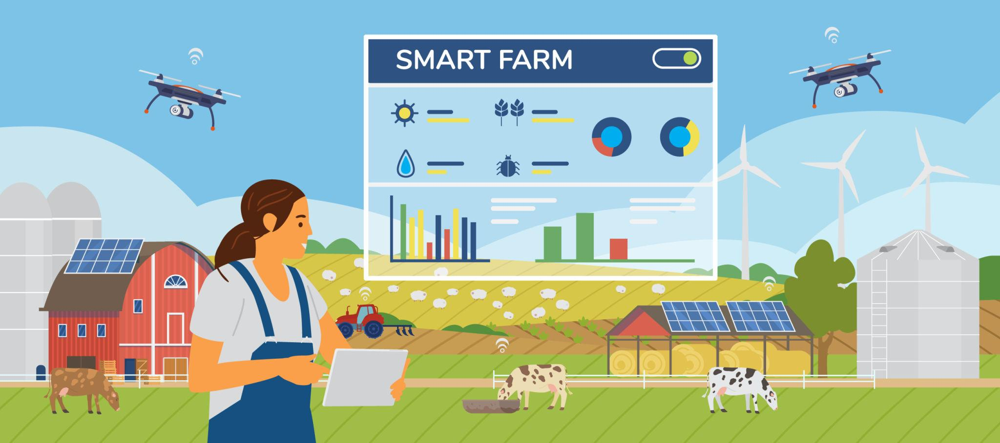

🚜 Modern Technology for Farmers | 🌾 Healthy Crops | 🛡 Smart Pest Protection

Predict suitable pesticides using crop type, soil condition, weather analysis, and pest symptoms for better crop health, increased productivity, and sustainable farming.
🌱 Accurate Prediction | 🌍 Scientific Farming | 🚜 Better Yield | 🐛 Smart Pest Management
✅ Helps farmers choose the right pesticide
✅ Reduces crop damage
✅ Improves agricultural productivity
✅ Supports smart farming decisions